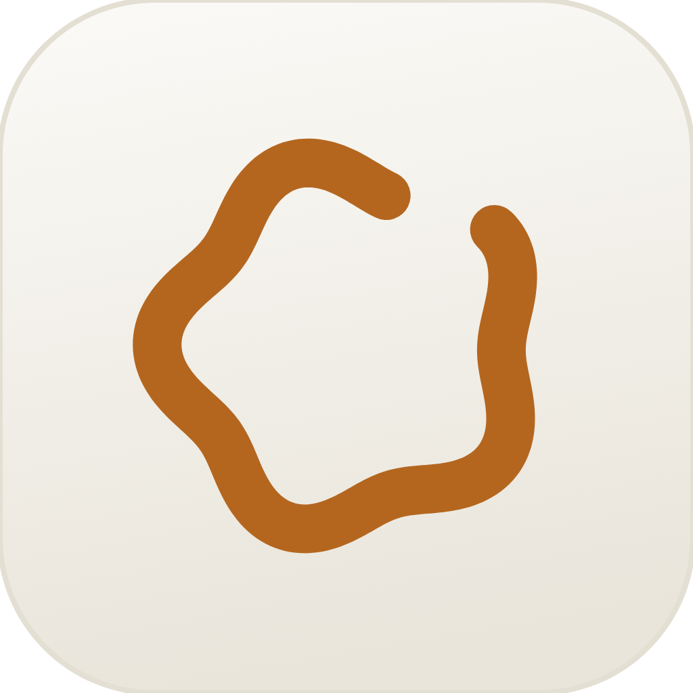

Phases 01–05 built a system that is technically complete and emotionally flat. Nothing here throws that away. The palette, the ember, the waveform-ring, the spring set — all locked. What changes is sequence, scale, and honesty: what the app says first, how big it says it, and whether it tells you the truth while you wait.
Three moves carry the whole redesign. One line that never breaks — the HUD becomes a single morphing stroke instead of five drawings. Dead time becomes useful time — the model downloads behind the Know-Me interview. The first sentence is kept forever — proof of magic, stored and shown.
Below, the current build recreated from the Swift — HUDController, OnboardingView, DashboardView — at 1:1, with the problems marked in place.
One motif, everywhere. The same win(u) taper and S(t) envelope drive the menu-bar glyph, the HUD, and the empty states. Very few apps have a mathematical signature. This one does.
Ember on warm neutral. #C97B35 over #1D1B18 is not a default. It reads as filament, not as a brand colour, which is exactly right for something that listens in the dark.
Stats already refuse engagement. "Time saved", not "sessions". The instinct is correct — it is just buried in a grid of four equal boxes.
The dashboard is a SaaS admin panel. Sidebar, four equal stat cards, a bar chart. Four equal cards means no card is the point. Nothing on Home is bigger than 26px, so nothing is the answer to "was this worth installing?"
Dot pagination in onboarding. A web carousel pattern in a Mac window. Mac onboarding names its steps or shows nothing.
Dark-only onboarding. .preferredColorScheme(.dark) — the first thing a light-mode user sees is the app overriding their system setting. It contradicts the "native, calm" premise in the first frame.
Three Allow buttons at once. Three parallel choices, no stated order, three OS dialogs stacking. The escape hatch ("Not listed? Click +…") appears only after a grant fails — the moment anxiety is already highest.
A progress bar with no number. "Getting ready" could mean ten seconds or eight minutes. A bar without a size, a rate, or an ETA is not honest progress; it is a screensaver.
The proof happens in the wrong place. "Try it" echoes the transcript into a box inside the onboarding window — but the promise is "in any app". The one demonstration is staged in the one place that isn't real, and the payoff is a single line of 12.5px green text.
The current flow starts at frame 4 and hopes the user survived the first three alone. Two of these frames are surfaces we already own but never designed — the download page and the DMG. One is owned by macOS and can only be predicted. The rest is the app.
The structural change: the model download stops being a step. It runs behind the Know-Me interview, so the longest wait in the product happens while the user is doing the most valuable thing they will ever do for transcription quality.
Today the HUD draws five unrelated paths and cuts between them. The redesign treats it as a single stroke that persists across every state — the wave settles into a coil, the coil unwinds into a line, light runs down the line, the line folds into a tick. Nothing appears, nothing disappears; the same object is doing a different job. That continuity is the signature, and it costs no new pixels.
Under Reduce Motion the HUD keeps its geometry and loses only its movement — the panel still fades in over 130 ms (no rise), the spine still fills but with a linear 200 ms step instead of a spring. The success tick is drawn complete rather than stroked on.
Everything else — the capsule material, the 10% hairline border, the shadow, the summon and dismiss timings — is untouched. This is a subtraction, not a rebuild.
Home has one job: convince someone who already installed the app that they were right. Four equal cards can't do that — equal weight means no claim. So the hours come back at 68 pt, the words become the footnote they always were, and the week chart stops counting the app's unit and starts counting the user's. The sidebar, the pane list, the card radius, the hairlines: unchanged.
The waveform-ring earns its keep: it is the same object at 16 pt in the menu bar, at 96 pt in onboarding, and at 1024 in the icon, and the win(u) taper makes it legible at every one. Nothing here proposes redrawing it. What's missing is a single new state — one the app plays exactly once, on first launch, to answer "where did it go?"

light variantThree springs already exist and all three are correct. Nothing is retuned. Two new entries are added — a morph for HUD state changes and a spine curve for progress — plus one-shot definitions for the payoff and the first-launch hello. Every row has a Reduce Motion column; none of them is "nothing happens", because a state change the user can't see is a bug.